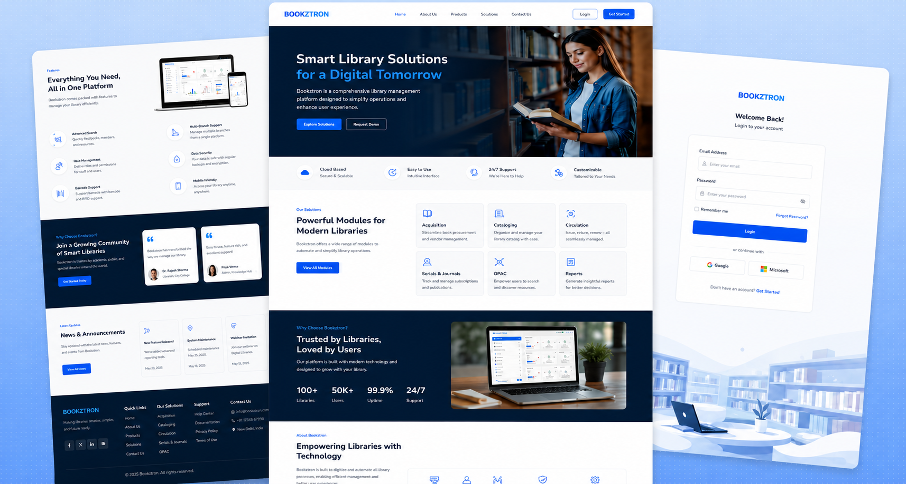

Bookztron is a custom web platform designed and developed by Infotive Solutions to help businesses establish a powerful online presence. Built with a user-first approach, the website combines modern UI/UX, responsive design, and high-performance development to deliver an exceptional experience across all devices.
Project:
Bookztron
Timeline:
Ongoing
Scope:
Custom Website Design & Development, Responsive UI/UX Design, Webflow Development, Custom CMS Implementation, Interactive Animations & Micro-Interactions, Performance & SEO Optimization, Cross-Browser Compatibility, Scalable Architecture, Contact Forms & Lead Generation, Ongoing Maintenance & Support.

Bookztron required a modern, scalable, and user-centric digital platform that could effectively communicate its services while delivering a seamless user experience. The challenge was to create a high-performance website that balanced clean design, intuitive navigation, and technical excellence, ensuring the platform could support future business growth and evolving customer needs.
By combining strategic UI/UX design, modern development practices, and performance-focused optimization, Infotive Solutions delivered a scalable digital solution that helps Bookztron strengthen its online presence and drive sustainable business growth.
At Infotive Solutions, we delivered a complete digital solution for Bookztron by combining strategic UI/UX design, modern web development, and scalable architecture. Our approach focused on creating a high-performing, user-friendly website that not only reflects the brand's identity but also supports long-term business growth and seamless content management.
Through a combination of innovative design, reliable development, and performance-focused optimization, Infotive Solutions delivered a future-ready digital platform that empowers Bookztron to engage customers, strengthen its online presence, and scale with confidence
The Bookztron project demonstrates Infotive Solutions' expertise in delivering custom web solutions that combine modern design, robust development, and performance-driven strategies. By focusing on scalability, usability, and business objectives, we created a future-ready platform that helps businesses establish a stronger digital presence and achieve measurable results in competitive markets.